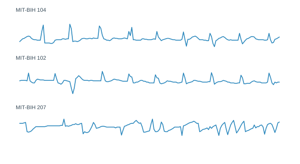

Bayesian nonparametric clustering
Flexible models that let the number of active patterns adapt to the data.
Probabilistic machine learning · time series · scientific applications
I work on probabilistic models for sequential data in which observations may be misaligned, may evolve over time, and may come from an unknown number of patterns.
My research combines Bayesian nonparametrics, Gaussian processes and dynamical models, with applications in ECG analysis, biomedical machine learning, wave spectra and trajectory clustering.
Research
In many structured time-series problems, the same issues keep appearing: what belongs to an existing pattern, when a new pattern should be introduced, how temporal variation should be aligned, and how a cluster should be updated as new observations arrive.
Representative signals
The core modelling difficulty is to represent structured variability without fixing the number of patterns in advance or confusing temporal deformation with genuinely different behaviour.

Current themes
Flexible models that let the number of active patterns adapt to the data.
Functional models for uncertain shapes, alignment and latent structure.
State-space formulations for pattern evolution and regime changes over time.
Software
bnomad is the main repository behind this line of work. It gathers the HDP-GPC implementation, examples, reproducibility material and application notes.

Selected papers
European Heart Journal · conference abstract
DOI ↗SSRN preprint
SSRN ↗arXiv preprint
arXiv ↗My training is in mathematics. I later moved into artificial intelligence research and completed a PhD at the University of Santiago de Compostela in 2026. Across that work I focused on Bayesian nonparametrics, Gaussian processes, sequential inference and their applications to biomedical and environmental data.